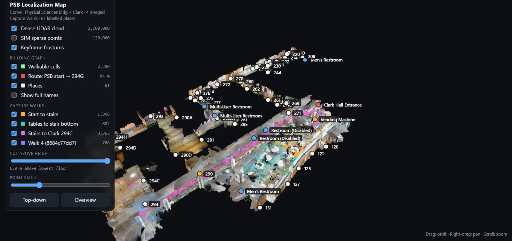
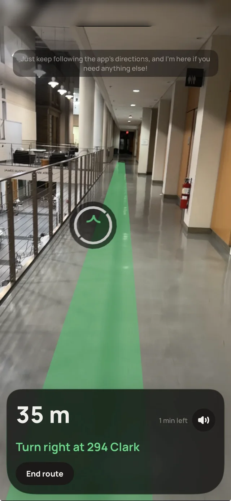
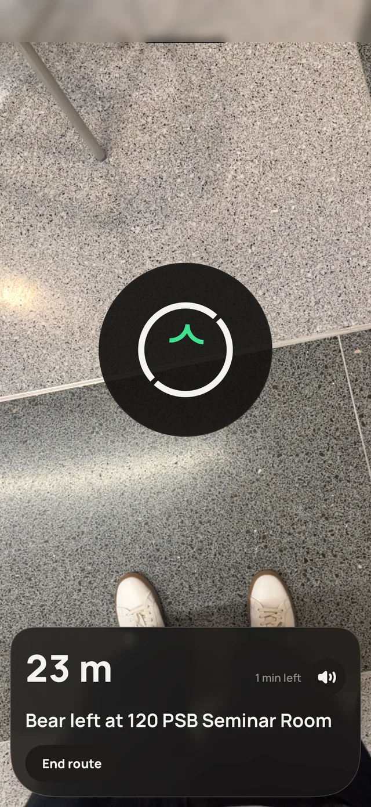

The atrium of Cornell's Physical Sciences Building, rebuilt from our walks.
GPS stops at the front door, and indoor positioning usually means beacons that cost venues tens of thousands of dollars. marko needs only a phone: one to map the building, and one to find your way. Raise it and a trail appears on the floor. Lower it and it becomes an arrow, with a voice guide for every turn.
We built it at BigRed//Hacks in October 2026 for the Physical Sciences Building (PSB) and Clark Hall. It took 2nd place out of 60 teams, and I presented the demo to 180+ attendees. The figures below run on the building's real map.
Walking is the map
Floor plans have no reliable scale and invent hallways, so instead someone walks every corridor with an iPhone, recording video, motion and LiDAR. This Capture Walk is to scale by construction and contains only walkable space.
Floor 2: everywhere someone walked becomes walkable. Drag the slider or press Replay.
Structure-from-motion turns the walk's keyframes into a 3D model, which is fused with the LiDAR into a point cloud. Four walks produced 1.1 million points and 61 labelled places.

The point-cloud map, with a route to room 294G. Explore it in 3D.
Routing on the phone
Each floor is a grid of walkable cells, linked by the stairs recorded on the walk. Dijkstra's algorithm solves routes on the phone in milliseconds, then straightens them into a few legs. The corners that remain become the turns.
Floor 2
Floor 1, the atrium
Pick two places or tap a dot. Grid path shows the raw path under the straightened one. Step-free stays off until PSB's elevator is mapped.
Finding you, without beacons
Indoors, GPS is useless and the compass is unreliable near steel. Our rule: a confident wrong fix is worse than no fix. Many corridors look alike, so marko matches the shape of the walls around you against the map, and only answers when one spot clearly beats the rest.
Your scan
Where it could be on floor 1
A full scan has one clear winner. A short one fits three spots equally, so marko rejects it rather than guess.
Between fixes, ARKit tracks the phone's motion, and each fix resets it to the map. Step counting with a compass, the fallback, drifts badly.
Drift rates are illustrative. Turn fixes off to watch both estimates wander.
Guidance
Phone up shows chevrons on the real floor, leading to the next turn. Phone down shows a Find My-style arrow with the distance and one instruction. Turn prompts are prepared when a route starts and play on-device, so they're never late, and a conversational guide answers questions like "where can I grab lunch?"
Phone up: route ribbon

Phone down: guidance arrow

The demo
Filmed live in PSB.
What's next
A new building takes one more walk. Step-free routing comes once the elevators are mapped. We're also exploring turning marko into a startup.
My role
- Built the 3D models and the walkable graph.
- Implemented Dijkstra routing.
- Worked on camera-to-map localization.
- Led strategy and branding, pitched to the judges, and presented the demo.
Built with Mateo del Rio Lanse, Neekon Tabatabai, and Maxwell Li. Figures adapted from Mateo's post.
Skills applied
Python, computer vision, structure-from-motion, LiDAR point clouds, visual localization, Dijkstra, Blender, augmented reality, and pitching.